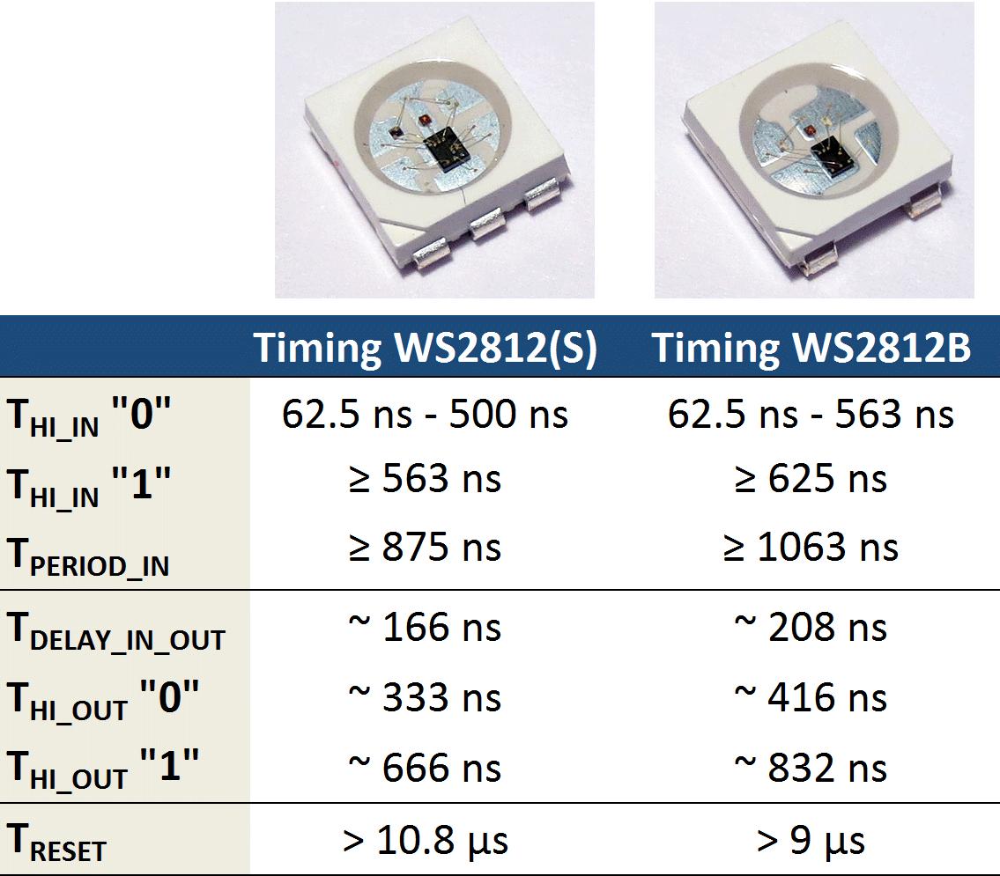

Работа со светодиодной лентой на Raspberry 3
Подключение и определение типа ленты
Есть два основных типа адресуемых светодиодов: WS2812 и WS2812B. Принцип управления один и тот же, однако тайминги разные. Найдите на ленте чип светодиода и определите сколько у него ножек: 6 или 4. Если ножек 6, то это WS2812, если 4 – то WS2812B или его аналог SK6812.

Т.к. принцип управления одинаковый, то и ленты подключаются одинаково:
| Лента | Raspberry Pi |
|---|---|
| GND | GND |
| 5V | 5V |
| DIN | GPIO21 или GPIO31 |
Типы лент для обозначения ленты в коде описаны в файле. Основные типы лент – это WS2812_STRIP (для WS2812) и SK6812_STRIP (для WS2812B или SK6812).
Установка библиотеки для работы со светодиодной лентой
Определите папку, в которой будут находиться файлы библиотеки, и открыть путь к этой папке в терминале. По-умолчанию можно использовать домашнюю папку, для перехода в неё нужно выполнить команду:
cd ~
Склонируйте репозиторий библиотеки для работы с led лентами на Raspberry Pi:
git clone https://github.com/jgarff/rpi_ws281x.git
sudo apt-get install scons python-dev swig
Соберите библиотеку с помощью Scons (команда выполняется внутри папки с исходным кодом библиотеки):
cd rpi_ws281x
scons
Соберите Python-обёртку библиотеки с помощью Swig и установите её для возможности использования в своих Python-скриптах.
cd python
sudo python ./setup.py build
sudo python ./setup.py install
Пример программы для светодиодной ленты на RPI3
Откройте в текстовом редакторе файл strandtest.py из папки python/examples (находится в папке с библиотекой):
nano strandtest.py
Найдите участок кода с настройками ленты:
# LED strip configuration:
LED_COUNT = 16 # Number of LED pixels.
LED_PIN = 18 # GPIO pin connected to the pixels (18 uses PWM!).
#LED_PIN = 10 # GPIO pin connected to the pixels (10 uses SPI /dev/spidev0.0).
LED_FREQ_HZ = 800000 # LED signal frequency in hertz (usually 800khz)
LED_DMA = 10 # DMA channel to use for generating signal (try 10)
LED_BRIGHTNESS = 255 # Set to 0 for darkest and 255 for brightest
LED_INVERT = False # True to invert the signal (when using NPN transistor level shift)
LED_CHANNEL = 0 # set to '1' for GPIOs 13, 19, 41, 45 or 53
LED_STRIP = ws.WS2811_STRIP_GRB # Strip type and colour ordering
Поправьте настройки для работы с лентой и сохраните файл. Чтобы использование ленты не мешало работе других устройств на Raspberry Pi, рекомендуется использовать следующие настройки (настройки подходят для ленты в комплекте с Клевер 3):
# LED strip configuration:
LED_COUNT = 30 # Number of LED pixels.
LED_PIN = 21 # GPIO pin connected to the pixels.
LED_FREQ_HZ = 800000 # LED signal frequency in hertz (usually 800khz)
LED_DMA = 10 # DMA channel to use for generating signal (try 10)
LED_BRIGHTNESS = 255 # Set to 0 for darkest and 255 for brightest
LED_INVERT = False # True to invert the signal (when using NPN transistor level shift)
LED_CHANNEL = 0 # set to '1' for GPIOs 13, 19, 41, 45 or 53
LED_STRIP = ws.SK6812_STRIP # Strip type and colour ordering
Запустите тестовую программу, используя права администратора:
sudo python strandtest.py
Права администратора необходимы для выполнения скрипта, т.к. без них нет доступа к функциям прерывания, которые использует библиотека для работы с лентой.
Совместимость с ROS и Python
При запуске программы с помощью sudo пользовательское окружение изменяется и появляются ошибки импорта библиотек, т.к. в окружении отсутствуют необходимые пути. Чтобы добавить в окружение пути к библиотекам Python и пакетам ROS, необходимо добавить в файл /etc/sudoers следующие строки:
Defaults env_keep += "PYTHONPATH"
Defaults env_keep += "PATH"
Defaults env_keep += "ROS_ROOT"
Defaults env_keep += "ROS_MASTER_URI"
Defaults env_keep += "ROS_PACKAGE_PATH"
Defaults env_keep += "ROS_LOCATIONS"
Defaults env_keep += "ROS_HOME"
Defaults env_keep += "ROS_LOG_DIR"
Функции для работы со светодиодной лентой
Для подключения библиотеки и её корректной работы требуется подключить следующие модули: neopixel - для работы ленты, time – для управления задержками, sys и signal для прерываний и формирования управляющего сигнала.
from neopixel import *
import time
import signal
import sys
Для работы с лентой необходимо создать объект типа Adafruit_NeoPixel и инициализировать библиотеку:
# Создание объекта NeoPixel c заданной конфигурацией
strip = Adafruit_NeoPixel(LED_COUNT, LED_PIN, LED_FREQ_HZ, LED_DMA, LED_INVERT)
# Инициализация библиотеки, должна быть выполнена перед другими функциями
strip.begin()
Основные функции, которые используются для управления лентой:
numPixels()- возвращает количество пикселей в ленте. Удобно для цикличного управления всей лентой целиком.setPixelColor(pos, color)– устанавливает цвет пикселя в позицииposв цветcolor. Цвет должен быть 24 битным значением, где первые 8 бит - красный цвет (red), следующие 8 бит - зелёный цвет (green) и последние 8 бит - голубой (blue). Для получения значенияcolorможно использовать функциюColor(red, green, blue), которая составляет это значение из 3х компонент. Каждый компонент должен находиться в диапазоне 0-255, где 0 – отсутствие цвета, а 255 – наибольшая доступная яркость компонента в светодиодном модуле.setPixelColorRGB(pos, red, green, blue)– устанавливает цвет пикселя в позиции pos в цвет, состоящий из компонентred,green,blue. Каждый компонент должен находиться в диапазоне 0–255, где 0 – отсутствие цвета, а 255 – наибольшая доступная яркость компонента в светодиодном модуле.show()– обновляет состояние ленты. Только после её использования все программные изменения перемещаются на светодиодную ленту.
Остальные функции можно обнаружить, вызвав команду
pydoc neopixel
Результат выполнения команды:
Help on module neopixel:
NAME
neopixel
DESCRIPTION
# Adafruit NeoPixel library port to the rpi_ws281x library.
# Author: Tony DiCola (tony@tonydicola.com)
CLASSES
__builtin__.object
Adafruit_NeoPixel
class Adafruit_NeoPixel(__builtin__.object)
| Methods defined here:
|
| __del__(self)
|
| __init__(self, num, pin, freq_hz=800000, dma=5, invert=False)
| Class to represent a NeoPixel/WS281x LED display. Num should be the
| number of pixels in the display, and pin should be the GPIO pin connected
| to the display signal line (must be a PWM pin like 18!). Optional
| parameters are freq, the frequency of the display signal in hertz (default
| 800khz), dma, the DMA channel to use (default 5), and invert, a boolean
| specifying if the signal line should be inverted (default False).
|
| begin(self)
| Initialize library, must be called once before other functions are
| called.
|
| getPixelColor(self, n)
| Get the 24-bit RGB color value for the LED at position n.
|
| getPixels(self)
| Return an object which allows access to the LED display data as if
| it were a sequence of 24-bit RGB values.
|
| numPixels(self)
| Return the number of pixels in the display.
|
| setBrightness(self, brightness)
| Scale each LED in the buffer by the provided brightness. A brightness
| of 0 is the darkest and 255 is the brightest. Note that scaling can have
| quantization issues (i.e. blowing out to white or black) if used repeatedly!
|
| setPixelColor(self, n, color)
| Set LED at position n to the provided 24-bit color value (in RGB order).
|
| setPixelColorRGB(self, n, red, green, blue)
| Set LED at position n to the provided red, green, and blue color.
| Each color component should be a value from 0 to 255 (where 0 is the
| lowest intensity and 255 is the highest intensity).
|
| show(self)
| Update the display with the data from the LED buffer.
|
FUNCTIONS
Color(red, green, blue)
Convert the provided red, green, blue color to a 24-bit color value.
Each color component should be a value 0-255 where 0 is the lowest intensity
and 255 is the highest intensity.
Почему именно так и можно ли по-другому?
Основные типы лент, которые используются для Клевера 3, это WS2812, WS2812B и SK6812 (аналог WS2812B). Они управляются по одному и тому же принципу: для массива светодиодов в ленте отправляется пакет данных по 24 бита на светодиод; каждый светодиод считывает первые 24 бита из пришедших к нему данных и устанавливает соответствующий цвет, остальные данные он отправляет следующему светодиоду в ленте. Нули и единицы задаются разными сочетаниями длительностей высокого и низкого уровня в импульсе.
Все эти ленты поддерживаются для управления библиотекой rpi_ws281x, при этом для управления используется модуль DMA (direct memory access) процессора распберри и один из каналов передачи данных: PWM, PCM или SPI, что гарантирует отсутствие задержек в управлении (а управляется всё на многозадачной операционке, это важно).
Есть некоторые особенности работы с каналами, например при передаче данных с помощью PWM (ШИМ) перестаёт работать встроенная аудиосистема распберри, при передаче данных по PCM блокируется использование подключенных цифровых аудиоустройств (при этом встроенная система работает), а при использовании SPI (кстати, требуется специальная настройка размера буфера и частоты GPU распберри для правильной работы) лед лента блокирует все остальные устройства, подключенные по этому каналу.
Есть некоторые особенности выбора канала DMA для управления лентой: некоторые каналы используются системой, поэтому их использование может привести к неприятным последствиям, например использование 5 канала рушит файловую систему Raspberry, т.к. этот канал используется при чтении-записи на SD карту. Безопасный канал – 10, он же установлен по умолчанию в приведённой выше библиотеке.
Поэтому сценарии использования LED-ленты следующие:
- Если нам не важна работоспособность встроенного аудио на распберри (и мы его не используем, т. к. аудио и лента будут выдавать билиберду в этом случае), то можно использовать PWM канал (для этого требуется подключить вход ленты к одному из следующих GPIO портов распберри: 12, 18, 40, или 52 для PWM0 канала и 13, 19, 41, 45 или 53 для PWM1 канала).
- Если нам не важно наличие на шине SPI других устройств, то можно управлять лентой по каналу SPI (GPIO на распберри 10 или 38).
Здесь требуется произвести следующие настройки (только для Raspberry Pi 3):
- увеличить размер буфера передачи данных для поддержки длинных лент, добавив стройку
spidev.bufsiz=32768в файл/boot/cmdline.txt; - установить частоту GPU для правильной частоты работы SPI, добавив строку
core_freq=250в файл/boot/config.txt.
- увеличить размер буфера передачи данных для поддержки длинных лент, добавив стройку
- Если нам важна и работа аудио, и подключение к SPI устройств кроме лед ленты, то можно управлять лентой по каналу PCM (GPIO 21 или 31). При этом никаких дополнительных манипуляций с Raspberry не требуется.
Исходя из вышеперечисленных способов управления лентой, наилучшим вариантом, позволяющим управлять лентой, сохранить работоспособность встроенной аудиосистемы и возможность подключения всяческих устройств и датчиков по SPI, является управление по каналу PCM (GPIO 21) с использованием 10 канала DMA.